Guia do PDI 2026
O Plano de Desenvolvimento Individual (PDI) é a ferramenta que estrutura o seu crescimento e do seu time na Cury. Siga este passo a passo para cadastrar, aprovar e comprovar a execução das suas ações de desenvolvimento no sistema LG.
Cronograma Oficial
* O cumprimento dos prazos é essencial para garantir a consistência e a efetividade do processo.
Passo a Passo no Sistema
Na sua tela inicial do autoatendimento da LG, clique em CICLO DE PERFORMANCE.
Na aba "ATIVIDADES PENDENTES", localize a atividade para iniciar preparação. Verifique se você está acessando o ciclo de 2026.
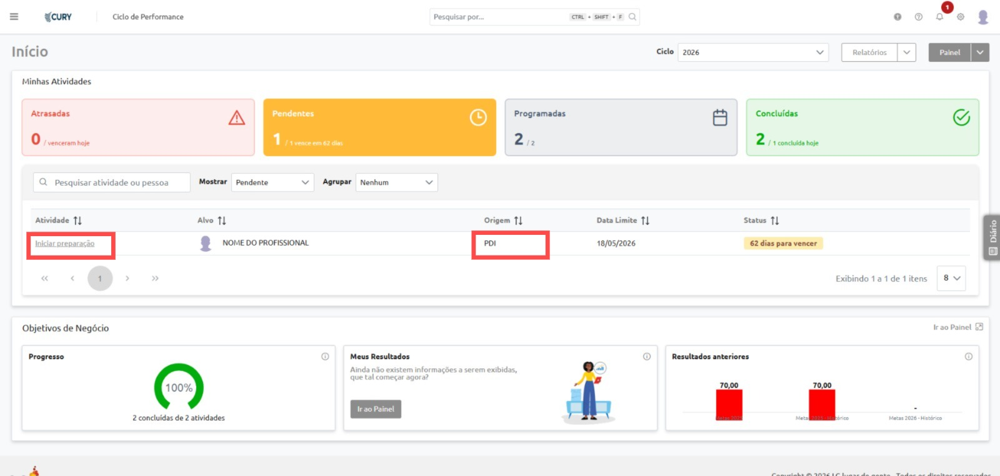
Identifique a área de inclusão do PDI, acessando o caminho: "Incluir" > "Incluir ações avulsas".
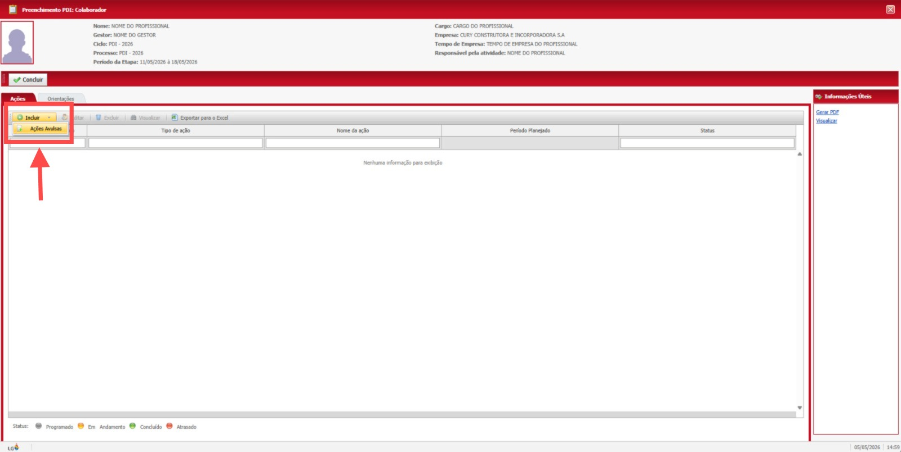
Regra de Ouro do PDI
O preenchimento deve ser realizado de acordo com a quantidade de ações definidas, considerando o mínimo de 3 ações e o máximo de 5 ações para o plano de desenvolvimento.
Defina os itens de cada campo do PDI, preenchendo corretamente as informações obrigatórias:
- Item a ser desenvolvido (Ex: Comunicação, Foco no Resultado).
- Tipo de ação (Formal, Vivencial ou Social).
- Nome da ação.
- Descrição da ação.
- Objetivo.
- Período da ação (Não se esqueça de incluir prazos claros!).
Ações Formais
Treinamentos, cursos, workshops, certificações e palestras oficiais.
Aprendizado Social
Mentorias, shadowing, rodas de conversa e feedbacks com lideranças.
Ações Vivenciais
Experiências práticas: assumir novos projetos ou resolver novos problemas.
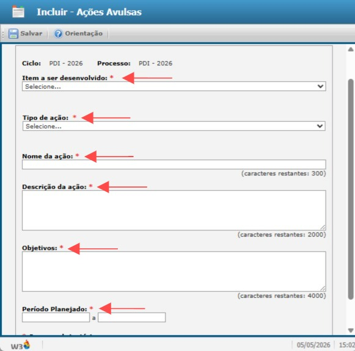
Exemplos Práticos de Preenchimento (Modelo 70:20:10)
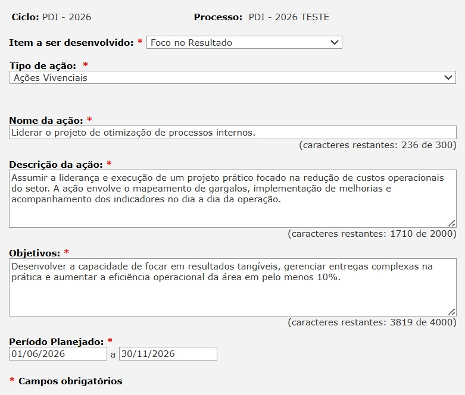
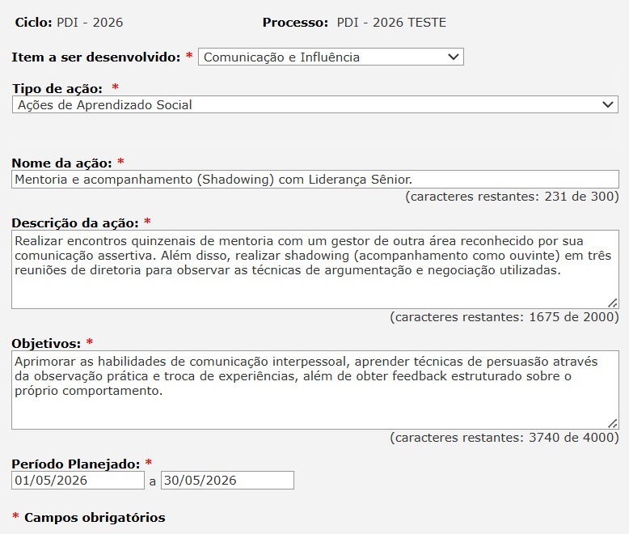
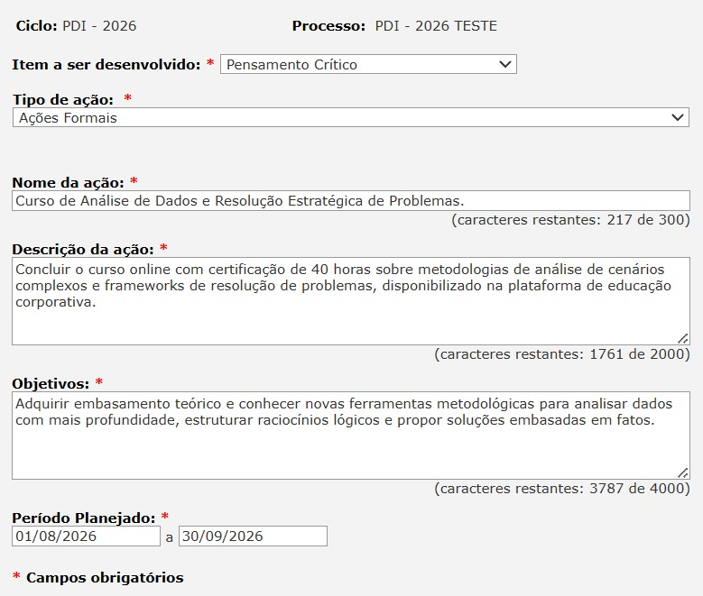
Após incluir entre 3 e 5 ações, o profissional deverá concluir o preenchimento na tela principal. O fluxo seguirá automaticamente para o gestor responsável.
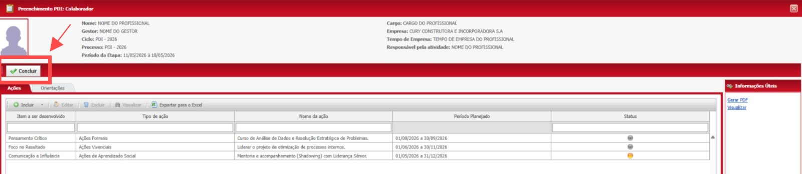
Para o Gestor (Aprovação):
Nesta etapa, o gestor deve analisar as etapas do PDI da sua equipe. Clique na pendência e selecione "Alterar/Validar".
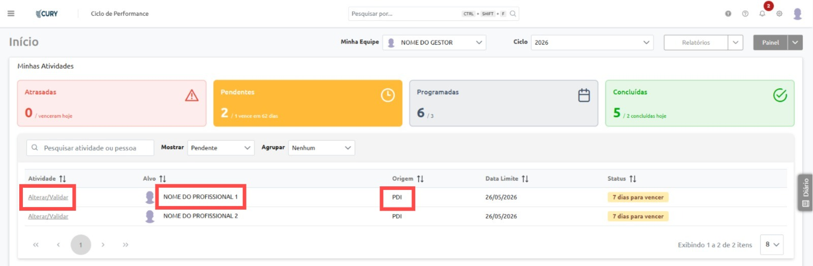
Se estiverem corretos, finalize clicando em "Concluir". Caso seja necessário alguma alteração ou inclusão, clique em "Editar".
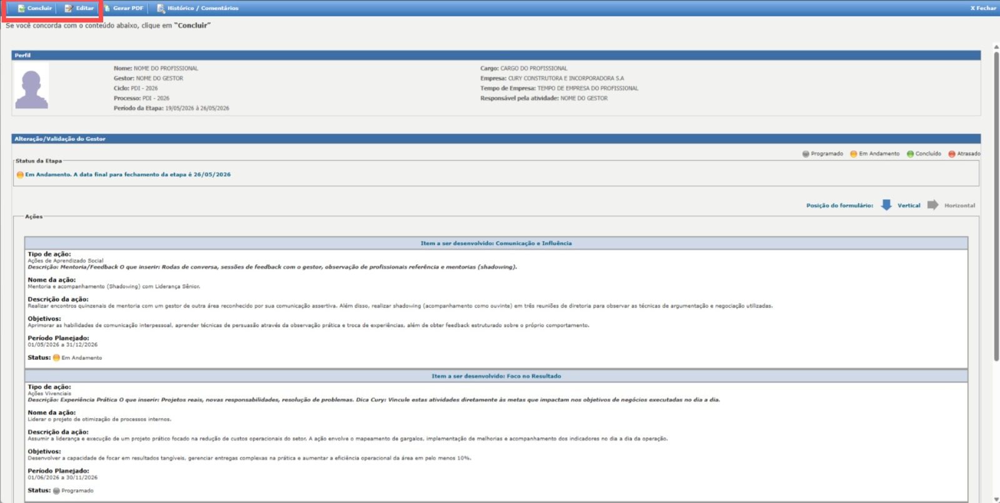
Para o Profissional (Visto Final):
Após a aprovação do gestor, o profissional deverá realizar o visto do PDI. As telas são as mesmas da aprovação do gestor. A única diferença é que, na página inicial, o nome da ação aparecerá como "Vistar", e a opção de conclusão servirá apenas para confirmar a ciência e a concordância com o plano, sem possibilidade de novas edições no sistema.
No decorrer do ano, conforme você for executando o seu PDI, os items ficarão disponíveis para a conclusão na tela inicial do Ciclo de Performance (Aba "Pendentes"). Clique no item desejado.
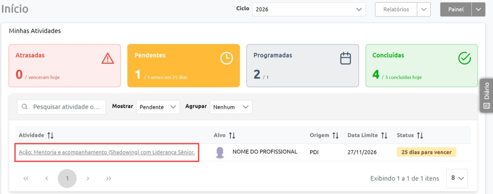
Revise as informações da ação, clique em "Concluir" e preencha os dados finais obrigatórios para validar o seu esforço:
- Data de Conclusão: Quando você finalizou esta etapa.
- Eficácia: Classifique o resultado da ação (Ineficaz, Parcialmente Eficaz, Eficaz ou Totalmente Eficaz).
- Comentários Finais: Faça um breve resumo sobre o que foi aprendido/entregue.
- Evidências (Anexos): Suba arquivos que comprovem a execução (Diplomas, certificados, prints de reuniões, e-mails de projetos, etc.). *Atenção ao limite de tamanho do arquivo na LG.
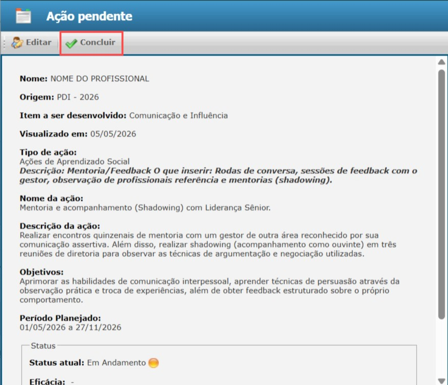
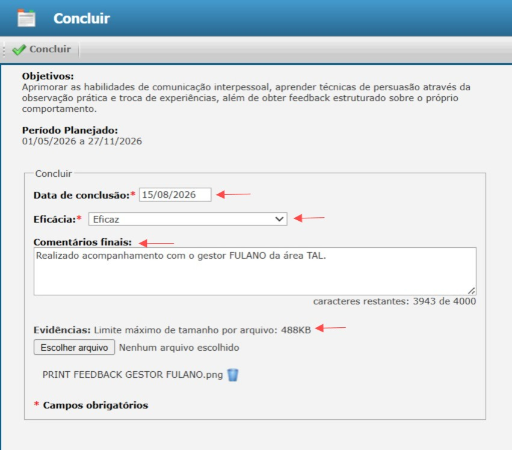